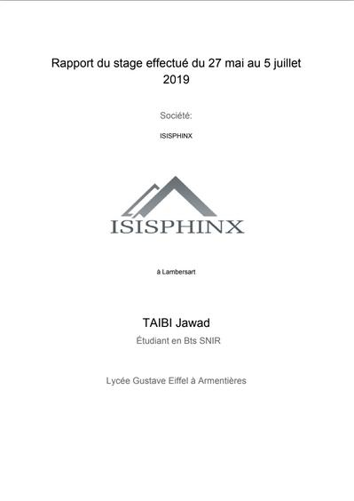

Semaine 2
Semaine 2 - Lundi
- Continuation du site web pour le compte-rendus de stage.
J'ai modifié les pages pour que toutes les pages pour que chaques semaine a une page et non une page pour la totalité

J'ai ensuite rajouté quelques images
- Commencement de quelques modifications sur le nouveau template.J'ai du cloner un repertoire deja éxistant sur Github, pour ce faire il a fallut "forké" cela va me donner ma version a moi du repertoire, une fois "forké" il faut cloner le repertoire pour cela nous cliquons sur "clone" cela va nous afficher une adresse qui va falloir copier.
voici tout d'abord le repertoire :

Voici l'adresse a copier :

Une fois l'adresse copier nous allons dans Vs Code et nous pouvons faire le raccourcis "ctrl + shift + p" cela va nous proposer la commande "Git:clone" on séléctionne donc cette commande puis nous collons l'adresse que l'on a copier précédamment.

Ensuite cela va télécharger le répertoire puis nous proposer d'ouvrir le fichier, on ouvre donc le fichier et nous devons ensuite installer les dépendances qui sont nécessaire pour le projet. pour ce faire il faut aller dans le terminal et taper "npm i", une fois télécharger toujours dans le terminal taper "npm run" attendre puis taper "gatsby develop".
Semaine 2 - Mardi
Fête de l'Aid-El-Fitr

Semaine 2 - Mercredi
- Continuation de mon site.
- Problème avec le clonage du repertoire, donc j'ai essayé de comprendre comment le réoudre pour pouvoir travailler dessus.
- Réolution du Problème.
- Incertion de mon site dans le repertoire.
- Deploiment de mon site en ligne avec Netlify.

Semaine 2 - Jeudi
- Continuation de mon site :
Modification du css pour rendre mon site un peu plus design et jolie a regarder. (version noir et bleu)
Rajout d'illustration.
Rajout du footer.

Semaine 2 - Vendredi
- Finalisation de l'estéthique du site.
- Commencement du compte rendu de stage format papier : page de presentation et les deux premières semaines.
